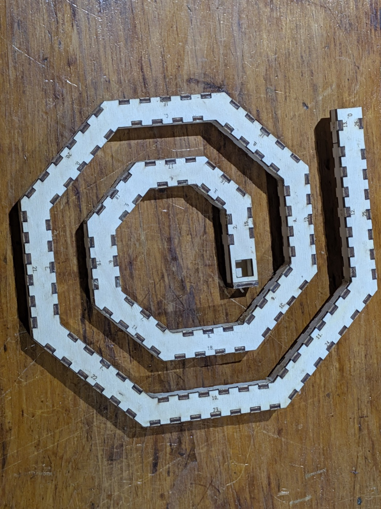
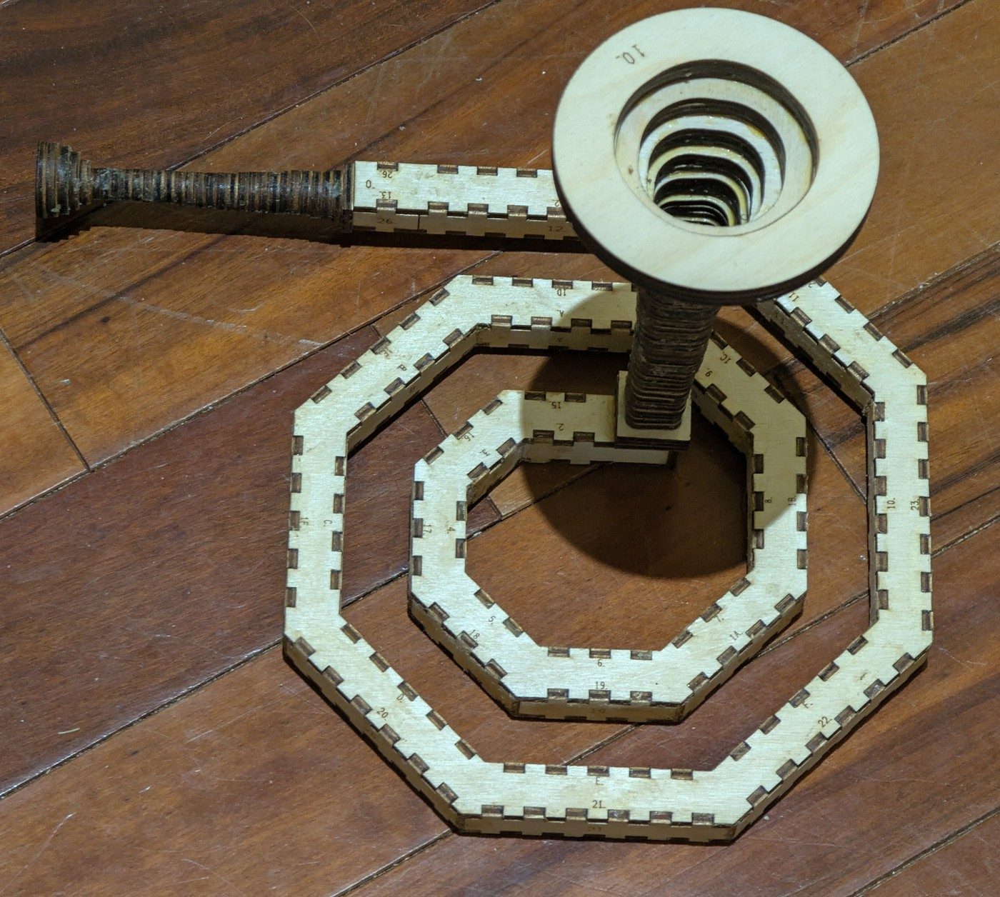

The spiral bore
The second design here that exists in wood, and the only one that is not a lattice walk. A rectangle swept along a flat coil: 1000mm of centreline in 17 facets of 45°, winding out from R34.7 to R112.9 with a straight lead in and out. Two faces of the tube are flat and two are faceted, which is what a swept curve buys — the section grows +8.2% at a mitre where a 90° lattice corner grows 41.4%.
Its viewer is a page of its own: drag to rotate, and the slider reveals the spiral a facet at a time. Turn it →
The cheek is the whole drawing
The cheek sheet has been cut, and cut twice, because the two cheeks are the same part and both go on the same way up.

The band is a single closed outline of 40 vertices, 216.50 × 218.51mm on a 236.50 × 238.51mm sheet, and it carries 149 mortices for 36 wall panels. Every one of those mortices is open at the rim, which is what --narrow buys: the cheek is no wider than the duct, so each tab is held across its thickness on one side only. The square hole near the inner end is the port — a 10mm square, drawn 9.85mm because the 0.15mm kerf opens it the rest of the way, and square rather than round because --port-square asks for the bore's own section. The wall panels that stand in the mortices are a second sheet, 574.95 × 96.60mm, and are not in the photograph.
36 panels and not 38, because the square port is what makes the lead panel go away. Each wall's lead is 20mm and carries a single tooth, dead centre, right where the port wants to be; --port-square folds that panel into the facet it already lies on — they are collinear, so nothing about the airway moves — and two panels with one tooth each leave the drawing. The plain sheet beside it, with no port at all, is 38 panels and 151 mortices.
Glued up, and not airtight
Both sheets are cut now, and the bore is glued up — the wall panels standing in the mortices between the two cheeks, a mouthpiece on the straight tail and a bell on the port at the inner end.

It is not airtight. A glue-up with this many joints — a mitre at every facet and a tab at every mortice — leaves air gaps all along both rims, and they are closed the same way they are closed on the built instrument: several coats of shellac, which seal the ply and fill the gaps in the same pass. The three-turn trumpet is the colour it is because it has had them. This spiral is still bare ply.
The numbers
| curve | a compass spiral, stepping its arc radius facet by facet |
| centreline | 1000.0mm |
| facets | 17 at 45°, plus a straight lead in and out |
| bend radius | R34.662 at the centre out to R112.903 at the rim |
| R / bore | 3.5 at the tightest |
| airway | 10 × 10mm square, 100mm² |
| section at a mitre | +8.2% |
| play | 0.025mm per side |
| parts | 36 wall panels + 2 cheeks + 1 end cap = 39, over 2 sheets |
| the cheek | 237 × 239mm — cut this sheet twice |
| the wall panels | 575 × 97mm |
Three sheets, and which one was cut
The design ships three variants, each as a cheek sheet and a panel sheet, in ../parts/bore/concept/swept-curve/spiral/ribbon-spiral-bore10-45deg-R35to113/cut-files/:
| port | panels | mortices | panel sheet | |
|---|---|---|---|---|
-narrow | none | 38 | 151 | 579 × 97mm |
-ported-narrow | round, 7 × 14mm | 38 + a cap | 151 | 579 × 97mm |
-ported-square-narrow | square, 10 × 10mm | 36 + a cap | 149 | 575 × 97mm |
The square-ported one is what the photographs show. A round port needs no lead panel moved and so keeps all 38; the square one asks for the bore's own section and pays two panels for it.
Rebuild it
The generator is ribbon_bore.py, in ../parts/bore/concept/swept-curve/. Report only, writing nothing:
python3 ribbon_bore.py --shape=spiral --port --port-square --cap --narrowEvery number on this page comes off that report. Writing needs an --out whose name says narrow, which the generator insists on so a sheet cannot overwrite its full-width twin:
cd parts/bore/concept/swept-curve && python3 ribbon_bore.py \
--shape=spiral --port --port-square --cap --narrow \
--out=spiral/ribbon-spiral-bore10-45deg-R35to113/cut-files/ribbon-spiral-bore10-45deg-R35to113-1000mm-ported-square-narrow.svgThese sheets were cut. Both of them reproduce byte-identically from the line above, which is what makes the numbers here measurements rather than notes.
The rest
the three-turn trumpet · the coiled trumpet · the switchback trumpet · the greek spiral · the bell and the mouthpiece